Thread-Level Parallelism¶
本章主要介绍从 ILP (instruction-level parallelism) 到 TLP (thread-level parallelism) 的扩展，以及多处理器共享内存系统中最核心的问题：cache coherence（缓存一致性）
- 前面章节讨论单个处理器内部如何提升并行度；
- 本章开始关注多个处理器 / core 执行不同线程时，如何共享内存、通信，以及保证多个 cache 中同一份数据不会互相矛盾。
本章内容可以分成三部分： - 多处理器架构(multiprocessor architecture)
- 集中式共享内存(centralized shared memory)
- 分布式共享内存(distributed shared memory)
5.1 Introduction¶
1. From ILP to TLP¶
ILP：由硬件自动发现，是在单条指令流内部寻找并行性，
TLP：由软件或程序员显式识别，把并行性提升到软件层级
- 程序员、编译器或运行时系统把程序划分成多个 thread，它们各自包含了大量指令，可以在不同 processor / core 上并行执行
- Thread 的粒度（grain size）从几百条到几百万条指令不等，因此 TLP 更适合利用多个 processor 的长期并行资源。
多处理器的基本模型：MIMD（multiple instruction streams, multiple data streams）
- 每个 processor 都可以 fetch 自己的 instruction stream，也可以操作自己的 data stream。
2. Multiprocessors¶
Multiprocessors: computers consisting of tightly coupled processors
- 协调与使用通常由单个操作系统来控制；
- 它们通过 shared address space 共享内存。
按照处理器集成方式，可以分为： - multicore：单个 chip 中集成多个 cores；
- multi-chip computers：系统中有多个 chips，每个 chip 本身也可能是 multicore
3. Exploiting TLP¶
两种利用 TLP 的软件模型：
- Parallel processing：一组 tightly coupled threads 协同完成同一个任务
- Request-level parallelism：多个相对独立的 processes 并行执行
5.2 Multiprocessor Architecture¶
| 类型 | 全称 | 主要特点 | 访问延迟 |
|---|---|---|---|
| SMP | symmetric / centralized shared-memory multiprocessor | 多个 processors 共享一个 centralized memory，通常规模较小 | UMA |
| DMP / DSM | distributed shared-memory multiprocessor | memory physically distributed 到不同 nodes，但仍提供 shared address space | NUMA |
5.2.1 Centralized Shared-Memory¶
在集中式共享内存处理器中，所有 processor 共享同一个 centralized memory，并且访问内存的延迟大致相同。因此它也叫 UMA (uniform memory access) multiprocessor。
- 该结构适合较少数量的 cores，常见于 \(32\) 个或更少 cores 的系统。
- 优点是编程模型简单，因为所有 processor 共享内存，且访问延迟比较一致。
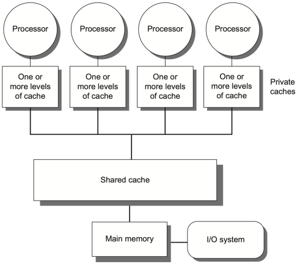
- 每个 processor / core 可以有自己的 private cache，多个 private caches 再通过 shared cache 或 interconnection network 连接到同一份物理内存
- 对程序员来说，所有 cores 共享同一个地址空间；
对硬件来说，关键问题为多个 private caches 中同一个地址的副本如何保持一致
5.2.2 Distributed Shared Memory¶
在分布式共享内存中，内存在物理上分布在多个节点（nodes），这样做可以：
- 增加 memory bandwidth，因为多个 nodes 可以并行服务内存访问；
- 降低 local memory latency，因为 processor 访问自身节点的 memory 更快；
- 支持更多 processors，扩展性比单一 centralized memory 更好。
但是，分布式共享内存的访问时间取决于数据所在位置，因此也叫 NUMA (nonuniform memory access)：访问 local memory 快，访问 remote memory 慢。
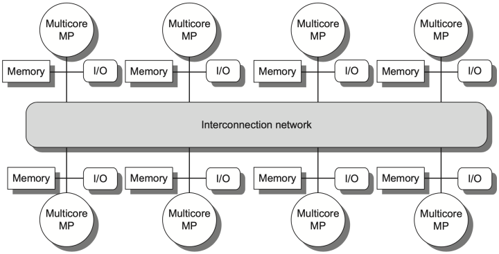
每个 node 由 multicore chip、本地 memory、I/O、以及 network interface 构成
- 所有 nodes 通过 interconnection network 连接起来，并共同提供一个 shared address space
- 也就是说，软件仍然可以用“共享内存”的方式写程序，但硬件访问一个地址时，需要判断它是在 local node 还是 remote node
Distributed Shared Memory 的代价
DSM 能提升扩展性，但会带来更复杂的 inter-processor communication 和更复杂的软件 / 硬件机制。特别是当一个 cache block 被多个 nodes 共享时，系统必须知道谁有副本、谁有最新数据、什么时候需要 invalidation 或 write-back。
5.2.3 Hurdles of Parallel Processing¶
1. Limited Program Parallelism¶
并行处理的第一个障碍是程序本身并不一定有足够的并行性。即使硬件资源充足，如果程序中有一部分必须串行执行，那么整体 speedup 也会受到 Amdahl's Law 限制。
Tip
有些程序改写后能暴露更多并行性，有些依赖则会迫使指令串行执行。
# before: compute A + B + 2
ld x1, 0(x0)
ld x2, 4(x0)
add x3, x1, x2
add x4, x3, 2
# after: expose more independent work
ld x1, 0(x0)
ld x2, 4(x0)
add x3, x1, 1
add x4, x2, 1
add x5, x3, x4
如果程序依赖链很长，硬件只能持续等待；如果能被拆成独立的工作单元，TLP 才有发挥空间。
Amdahl 's Law¶
如果原程序中 \(F_{seq}\) 的部分必须串行执行，剩余部分可以在 \(N\) 个处理器上并行执行，则
只要 \(F_{seq}\) 不为 \(0\)，processor 数量继续增加时，speedup 最终都会被串行部分卡住。
Example 1: 100 processors achieve speedup 80
题目：若使用 \(100\) 个 processors，希望达到 \(80\) 倍 speedup，原始计算中最多有多少比例可以是 sequential？
根据 Amdahl's Law：
解方程得到：
这说明要用 \(100\) 个 processors 达到 \(80\) 倍加速，串行部分只能占原程序大约 \(0.25\%\)。这个比例非常小，所以实际程序很难无限接近线性加速。
Example 2: 100 / 50 / 1 processors 三种模式
题目：某程序 \(95\%\) 的时间可以使用全部 \(100\) 个 processors；剩下 \(5\%\) 中，有一部分可以使用 \(50\) 个 processors，其余只能使用 \(1\) 个 processor。若目标 speedup 仍为 \(80\)，剩余 \(5\%\) 中有多少比例必须使用 \(50\) 个 processors？
设原程序中有 \(x\) 的比例使用 \(50\) 个 processors，则只能串行的比例为 \(0.05-x\)。并行后时间为：
目标 speedup 为 \(80\)，所以：
也就是说，原程序中约 \(4.8\%\) 的部分必须能用 \(50\) 个 processors 执行。换成剩余 \(5\%\) 内部的比例，就是其中绝大部分都不能完全串行。
2. High Communication Cost¶
并行处理的第二个障碍是通信代价高。多个 processors 之间经常需要访问 remote memory 或同步共享数据，而 remote access 的 latency 远高于本地计算。
假设系统有 32 个 processors
- remote memory reference 的 latency 为 \(100\text{ ns}\)；
- clock rate 为 \(4.0\text{ GHz}\)；
- base CPI 为 \(0.5\)；
- 若 \(0.2\%\) 的 references 是 remote references，问没有通信时会快多少。
首先把 remote latency 换成 cycles：
如果 \(0.2\%\) 的 references 需要 remote access，则平均额外开销为：
因此有通信时的 CPI 为 \(\text{CPI}=0.5+0.8=1.3\)，无通信版本快\(\dfrac{1.3}{0.5}=2.6\)
Tip
即使 remote reference 只占 \(0.2\%\)，也可能让 CPI 从 \(0.5\) 增加到 \(1.3\)。这说明在多处理器中，少量高延迟通信就足以吞掉大量并行收益。
3. Improving Parallel Processing¶
- insufficient parallelism：
- 设计更好的并行算法
- 让软件系统尽量让程序运行在使用完整 processor complement 的模式中；
- long-latency remote communication：
- 可以从架构侧缓存 shared data，
- 也可以由程序员通过 multithreading、prefetching 等方法隐藏或减少延迟
5.3 Centralized Shared Memory¶
Centralized Shared Memory Structure
Centralized shared-memory 系统通常在处理器和共享内存之间加入 large, multilevel caches，以降低 memory bandwidth 需求。缓存的数据可以分为两类：
- Private data：只被单个 processor 使用
- Shared data：多个 processor 使用
Cache Coherence Problem¶
Question
Shared data 可以复制到多个 caches 中，这样能降低访问延迟、降低 memory bandwidth 需求、减少对共享 memory 的 contention。但是如果没有额外机制，不同 processors 的 caches 可能保存同一个 memory location 的不同值。
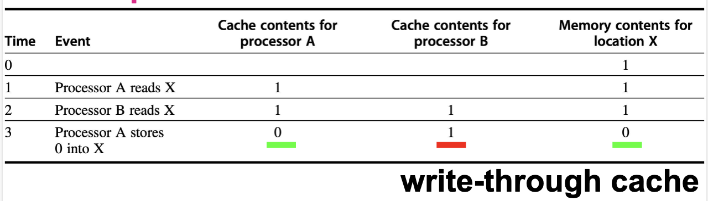
Cache coherence problem：同一个 memory location 的多个 cached copies 是否保持一致。
- Global state：由 main memory 定义；
- Local state：由每个 processor core 私有的 cache 定义
A memory system is Coherent if any read of a data item returns the most recently written value of that data item.
- Coherence（缓存一致性）：对于「同一个地址」，读操作能否拿到最新写的值
- Consistency（内存一致性）：一个处理器的写操作，什么时候对其他处理器可见
Coherence Property¶
一个 memory system 如果是 coherent，至少需要满足下面三个性质：
性质 1：同一 processor 的 write-read 顺序必须保持
- 自己写的东西，自己一定能看到。
- 如果 processor \(P\) 对 location \(X\) 写入一个值，随后 \(P\) 自己再读 \(X\)，并且中间没有其他 processor 写 \(X\)，那么这次 read 必须返回 \(P\) 自己写入的值。
- 这个性质是在保留 program order。即使在单处理器系统中，我们也期待它成立。
性质 2：其他 processor 的写入最终必须可见
- 如果一个 processor 写了 \(X\)，另一个 processor 在足够晚的时候读 \(X\)，并且中间没有其他 writes to \(X\)，那么这个 read 应该返回前面写入的值。
- 这里的关键是 “sufficiently separated in time”。如果两个操作几乎同时发生，写入的数据可能还没有离开写方 processor，此时不能要求读方立刻看到新值。
性质 3：Write serialization
- 对于同一个 memory location，任意两个 processors 对它的 writes 必须被所有 processors 以相同顺序观察到。
- 例如，对 \(X\) 先写入 \(1\) 再写入 \(2\)，系统不能允许某些 processor 看到顺序是 \(1\rightarrow2\)，另一些 processor 看到顺序是 \(2\rightarrow1\)。否则各个 processor 对同一地址的历史就不一致了。
Consistency Problem¶
When a written value will be seen is important
- 假设发生 RAW 问题，两个操作的间隔时间极小，可能无法确保上一个写入操作的数值能被下一个读取操作读出，因为写入的数值可能还存留在 CPU 中，没有写入 cache
Coherence 不等于“立即可见”
Coherence 规定 read 应该返回哪些值，以及同一地址的 writes 必须如何排序；但一个 write 什么时候必须被别的 processor 看到，是 memory consistency model 负责定义的问题。
5.4 Cache Coherence Protocol¶
多个处理器各自有私有缓存，当它们缓存同一个内存地址时，必须有一套协议来保证数据一致性。这个协议的核心任务就是：追踪每个 cache block 的共享状态。
| 协议类型 | 基本思想 | 适合场景 |
|---|---|---|
| Directory based | 每个 physical memory block 的 sharing status 存在同一个地址（被称为 directory）中 | 更适合 distributed shared memory 和较大规模系统 |
| Snooping | 每个 cache controller 监听共享总线 / broadcast medium，观察别人是否请求自己持有的 block | 适合 centralized shared-memory / SMP |
5.4.1 Directory Based Coherence Protocol¶
Directory 协议（目录协议）
- 每个内存 block 对应一个 directory entry，记录：
- 哪些缓存持有这个 block 的副本
- 当前状态（独占/共享/未缓存等）
- 当处理器要访问某个 block 时，先查 directory，然后通知相关处理器，而不是广播
5.4.2 Snooping Coherence Protocol¶
Snooping 协议（监听协议）
- 所有 cache controller 监听（snoop） 共享总线上的每一个事务，一旦发现地址命中自己持有的 block，就根据协议执行状态转换。
| 策略 | 做法 | 优点 | 缺点 |
|---|---|---|---|
| Write invalidate | 写时让其他 cached copies invalid | 最常用，写者获得 exclusive access | 后续其他 processor 读同一 block 会 miss |
| Write update / broadcast | 把新值广播给所有 cached copies | 读取时可继续命中 | 消耗更多 bandwidth |
Write Invalidate Protocol¶
- 当一个处理器要写入某个数据之前，先把所有其他缓存中的副本全部作废（invalidate），让自己成为唯一的持有者，获得独占访问权。
工作流程
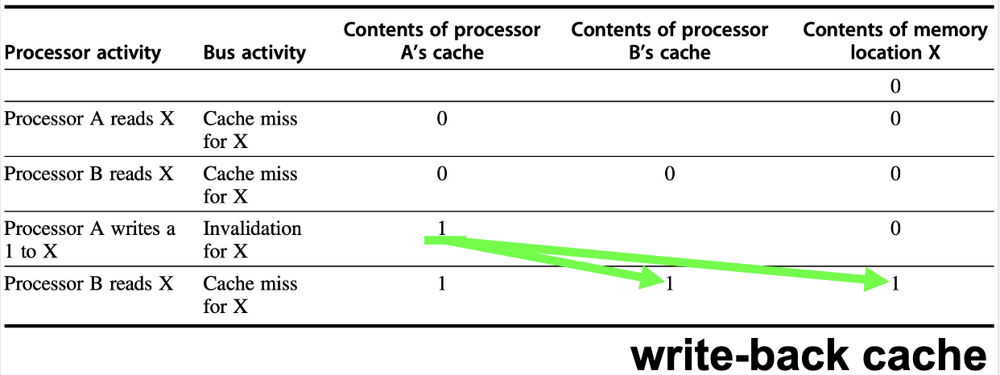
执行 invalidate 时，处理器会获得 bus access，并把需要 invalidated 的地址广播到 bus 上。其他 processors 会持续监听 bus 地址并检查地址：
- 如果该地址不在自己的 cache 中，则不需要任何操作；
- 如果该地址在自己的 cache 中，并且对应 block 是有效的，则把该 block 作废；
- 如果某个 processor 发现自己有该 block 的 dirty copy（被自己改过），则它需要提供这个 cache block 给请求者，并取消或延后 memory/L3 的相应。
Write update / broadcast protocol¶
该协议的想法更加直接：把新值推送给所有缓存了该数据的 caches。
- 但是 bandwidth 消耗很大，尤其是写操作频繁而其他 processors 并不马上读取新值时。
- 因此，现代系统更常用 invalidate：只需要让别人失效，真正需要新值时通过 miss 再取。
5.4.3 MSI Protocol¶
此处介绍 Write invalidate protocol 的具体实现。
Finite-State Controller
- 每个 core 中会加入一个 finite-state controller，它需要响应两类请求：
- 来自本 core processor 的 read/write 请求；
- 来自 bus （或其他 broadcast medium）的 snoop 请求。
- 这个 controller 根据请求类型和当前 cache block state，改变 block state，并在必要时使用 bus 获取数据或发送 invalidation 使得数据无效。
MSI protocol 是 write invalidate protocol 的基本形式，包含三个 block states：
- Invalid：cache 中该 block 无效
- Shared：cache 中该 block 有效，可能和其他 caches 共享；通常是 clean
- Modified：cache 中该 block 已被修改；该状态意味着该 block 是 exclusive（独占）
Cache Action Table¶
表格把 coherence controller 需要处理的请求分成两类：
- 上半部分来自本地 processor，下半部分是处理器接听来自 bus 的广播。
- 这个表告诉我们：同一个 read miss / write miss，在不同 block state 下，可能只是普通 miss，也可能触发 replacement，或者触发 coherence action。
| Request | Source | block state | cache action | 含义 |
|---|---|---|---|---|
| Read hit | Processor | S 或 M | Normal hit | 处理器要读 X，X 在本地缓存中（状态为 S 或 M） |
| Read miss | Processor | I | Normal miss | 处理器要读 X，X 不在本地缓存中（状态为 I） |
| Read miss | Processor | S | Replacement | 处理器要读 Y 但 cache set 已满，需要替换当前处于 S 状态的 X，再在总线上发 read miss |
| Read miss | Processor | M | Replacement | 地址冲突，需要先 write-back dirty block，再发 read miss |
| Write hit | Processor | M | Normal hit | 处理器要写 X，X 在本地缓存中且状态为 M |
| Write hit | Processor | S | Coherence | 处理器要写 X，X 在本地缓存中但状态为 S；发 invalidate 改变 ownership |
| Write miss | Processor | I | Normal miss | 处理器要写 X，X 不在本地缓存中；在 bus 上发 write miss，请求数据和写权限 |
| Write miss | Processor | S | Replacement | 处理器要写 Y，需要替换当前处于 S 状态的 X，再在总线上发 read miss |
| Write miss | Processor | M | Replacement | 处理器要写 Y，需要先 write-back dirty block，再发 write miss |
| Read miss | Bus | S | No action | 其他 processor 读，local cache 保持 shared |
| Read miss | Bus | M | Coherence | 其他处理器要读 X，而本地缓存中 X 是 M 状态，需要把 block X 放到 bus 上，并变成 shared |
| Invalidate | Bus | S | Coherence | 其他处理器发来 Invalidate 请求，本 cache invalidates |
| Write miss | Bus | S | Coherence | 其他 processor 要写该 block，本 cache invalidates |
| Write miss | Bus | M | Coherence | 其他 processor 要写本 cache 独占的 dirty block，本 cache write-back 并 invalidates |
Normal miss / replacement / coherence 的区别
- Normal miss 是单处理器 cache 里也会出现的普通未命中。
- Replacement 是因为当前 cache block 位置被别的地址占用，需要替换旧 block。
- Coherence action 是为了维护多处理器一致性，即使本地地址命中，也可能因为别人要写而失效。
State Transition¶
Graphs of CPU and bus
- Request from CPU
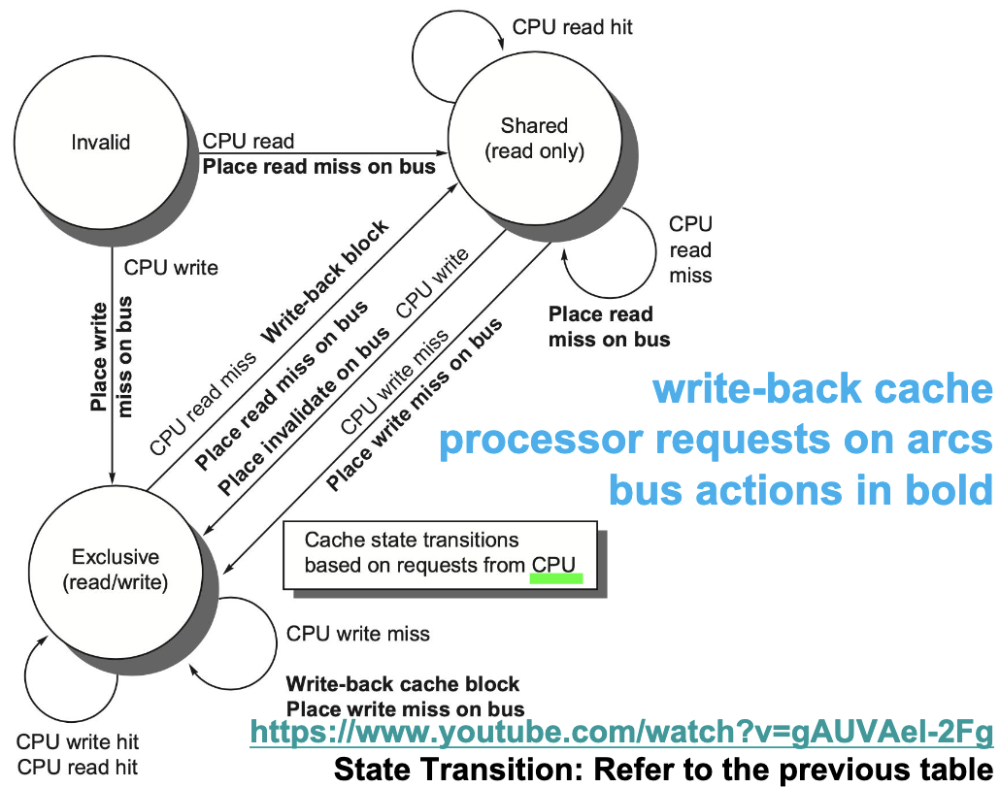
- Request from bus
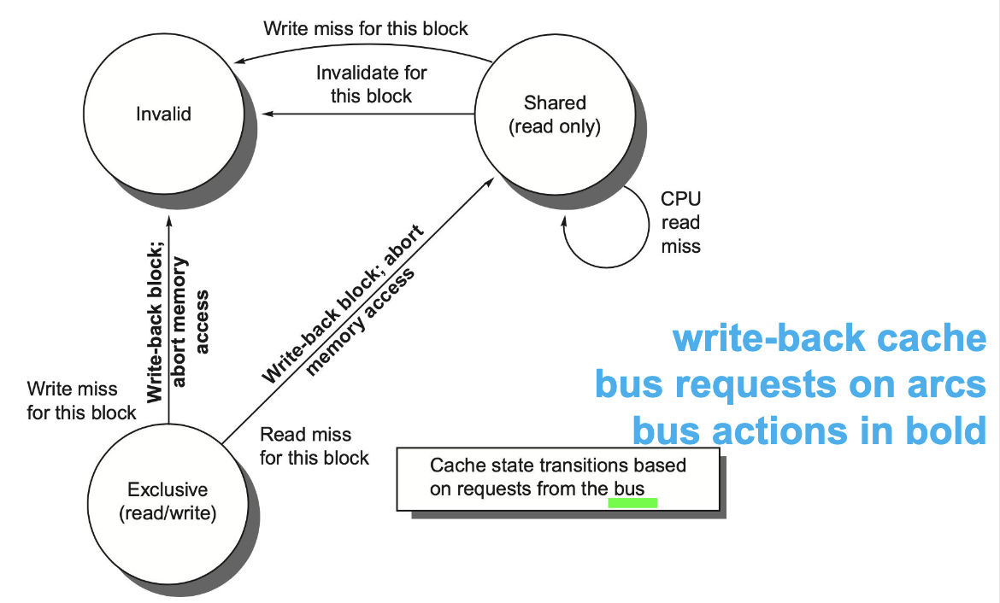
- State Transition Graph
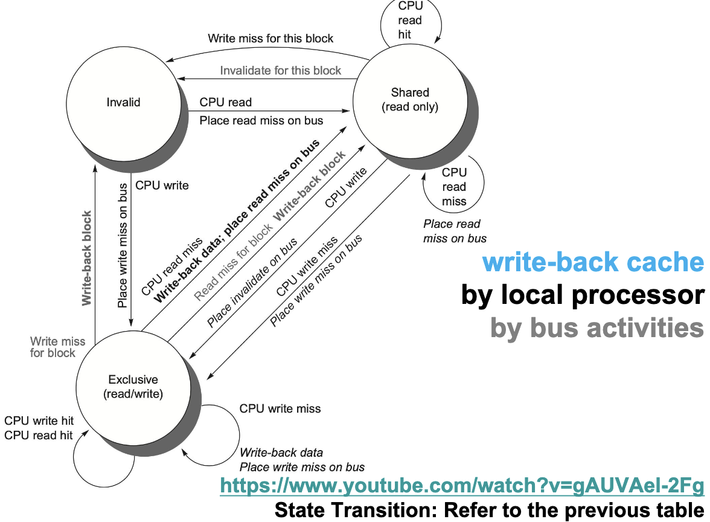
| 当前状态 | 事件 | 新状态 | 动作 | 补充说明 |
|---|---|---|---|---|
| I | CPU read | S | Place read miss on bus | 从内存或其他 cache 获取数据，获得共享副本 |
| I | CPU write | M | Place write miss on bus | 获取数据并获得独占写权限，同时使其他副本失效 |
| S | CPU read hit | S | 直接读取本地 cache | 无总线事务 |
| S | CPU write hit | M | Place invalidate on bus | 发送 Invalidate，获得 ownership 后写入 |
| M | CPU read hit | M | 直接读取本地 cache | 无总线事务 |
| M | CPU write hit | M | 直接写本地 cache | 无总线事务，cache line 仍为 dirty |
| M | CPU read miss for another block | 新块状态（S 或 M） | Write-back block + Place read miss on bus | 当前 dirty block 被替换，必须先写回 |
| M | CPU write miss for another block | M | Write-back block + Place write miss on bus | 当前 dirty block 被替换，必须先写回 |
| S | Bus read miss | S | 无需状态变化 | 其他处理器读取该块，大家继续共享 |
| S | Bus invalidate | I | Invalidate block | 其他处理器获得写权限 |
| S | Bus write miss | I | Invalidate block | 其他处理器请求写入，需要独占 |
| M | Bus read miss | S | Write-back data / Supply block | 将最新数据提供给请求方，自己降级为 Shared |
| M | Bus write miss | I | Write-back block + Invalidate | 其他处理器获得写权限，本地副本失效 |
5.4.4 MSI Extensions¶
MESI¶
MESI 在 MSI 基础上增加了 Exclusive (E) 状态：
- 该 cache block 只存在于一个 private cache 中；
- block 是 clean 的，即 memory / LLC 中的数据仍然是最新的；
- 由于没有其他 cached copies，本地 processor 后续写它时不需要在 bus 上发送 invalidate
Improvement
- MESI 的关键优化是：
- 这个转换可以 silent 完成，不需要广播。
- 如果其他 processor 对 E 状态的 block 发出 read miss，那么原来的 E 状态必须变成 S：
MOESI¶
MOESI 在 MESI 基础上增加 Owned (O) 状态：
- 该 cache 是这个 block 的 owner；
- memory 中的数据已经 out-of-date；
- 其他 caches 可以有 shared copies，但owner 必须在其他 miss 时提供数据，并在 replacement 时 write back 到 memory。
Improvement
在 MSI / MESI 中，如果一个 Modified block 被其他 processor read miss 请求，常见做法是把 M 变成 S，并把最新数据写回 memory。MOESI 则允许：
这样原 owner 不必立刻把 shared block 写回 memory。新请求方得到 shared copy，而原 cache 保持 O 状态，表示 memory 仍旧过期，后续需要由 owner 负责提供或写回数据。
Abstract
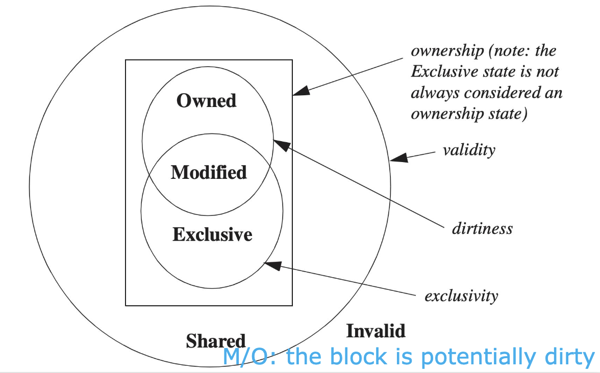
MOESI 各状态的集合关系：
- 除 I 之外，其余状态都是 valid；
- M、O、E 都是 ownership states；
- M 和 E 表示 exclusivity，即没有其他 cache 拥有 valid copy；
- M 和 O 表示 block 可能 dirty，memory copy 可能不是最新。
MESI Example
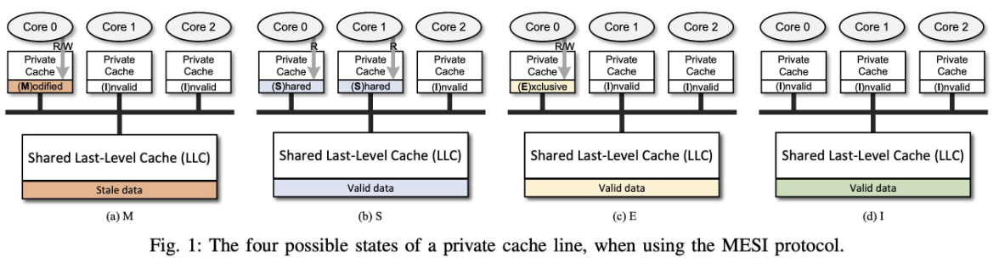
- 根据各个 core 中的数据状态，判断 shared last-level cache 是否有效
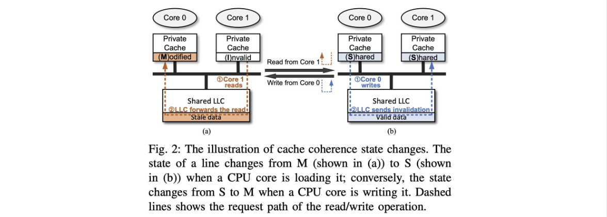
- 两种状态的转变
MESIF¶
MESIF 增加 Forward (F) 状态，用来指定多个 shared copies 中由哪个 processor 响应请求。
- 最近一次请求该 line 的 processor 会被赋予 F state
- F 状态的作用是减少多个 sharers 同时响应同一个请求的混乱，尤其适合 distributed memory organizations 中优化响应路径。
5.4.5 Increasing Snoop Bandwidth¶
Bottleneck
Snooping protocol 要求所有 cache 监听 bus 上的每一次一致性事务，这不仅会增加 cache tag 的查询开销，还会与处理器正常的 cache 访问竞争资源。随着核心数增加，broadcast bandwidth 和 snoop bandwidth 成为系统扩展性的主要瓶颈。
提升 snoop bandwidth 的方法：
- Duplicate tags：
复制一份 cache tags，snoop 请求查 duplicate tags，减少对普通 cache 访问的干扰 - Distribute outermost shared cache (L3) ：
把最外层 shared cache 分散到多个 slices，每个 processor 负责一部分 L3 / address space 的审查，这样可以扩展 L3 侧 snoop bandwidth - Place a directory at outermost shared cache (L3)：
L3 作为 snoop filter，只向可能持有 block 的 caches 发送请求
现代多核处理器和大型共享缓存系统中常见的设计思路：通过多 Bank 共享 Cache + 互连网络代替单一共享总线，实现了更高的内存带宽和更好的多核扩展性。
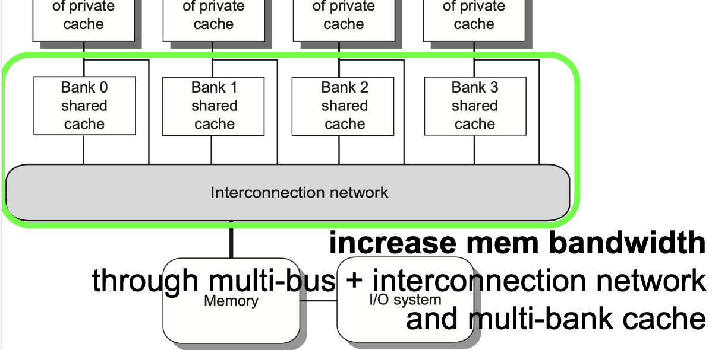
5.4.6 Coherence Miss and False Sharing¶
多处理器中的 cache miss 除了普通的 miss，还会出现由 coherence 引起的 misses。
True Sharing Miss¶
多个处理器读写同一个数据项，一致性协议必须在它们之间传递数据或通知，从而产生的 miss：
- 写 shared cache block，需要 invalidation 来获得 ownership；
- 假设 P0 和 P1 缓存中都有 X，P0 要写 X
- P0：X 为 share，不能直接写，需要发送 invalidate 到总线，这是一个 write miss
- P1：接收到 write miss，X 变成 invalid 状态
- 假设 P0 和 P1 缓存中都有 X，P0 要写 X
- 读 modified word，触发 block transfer
- 假设 P0 缓存中都有 X（M 状态），P1 要读 X
- P1：缓存中没有 X ，发生 read miss，需要发送信号到总线
- P1：接收到 read miss，X 写回并变成 shared 状态
- 假设 P0 缓存中都有 X（M 状态），P1 要读 X
False Sharing Miss¶
False sharing miss 来自 cache block 的粒度过大。
- 一个 cache block 只有一个 valid bit / coherence state，即使两个 processors 操作的是 block 中不同 words，也会互相 invalidated。
- 如果 processor A 写了 block 中的 \(x_1\) ，processor B 后续读的是同一个 block 中的 \(x_2\)，而 B 的 miss 只是因为整个 block 被 invalidated，并不是因为它真的需要 A 写入的 \(x_1\)，那么这就是 false sharing。
True / False Sharing Miss 判断
假设 \(x_1\) 和 \(x_2\) 位于同一个 cache block，初始时该 block 在 P1 和 P2 的 caches 中都处于 Shared state。访问序列如下：
| Time | P1 | P2 | 判断 | 原因 |
|---|---|---|---|---|
| 1 | Write \(x_1\) | true sharing miss | P1 写 \(x_1\) 要获得 ownership，并使 P2 中同 block 的副本失效 | |
| 2 | Read \(x_2\) | false sharing miss | P2 读的是 \(x_2\)，miss 是被 P1 写 \(x_2\) 连带 invalidated 造成的 | |
| 3 | Write \(x_1\) | false sharing miss | block 因 P2 读 \(x_2\) 回到 shared，P1 再写 \(x_1\) 需要 invalidation，但 P2 实际共享的是 \(x_2\) | |
| 4 | Write \(x_2\) | false sharing miss | P2 写 \(x_2\) 需要 invalidation，P1 写的是 \(x_1\)，二者是同 block 不同 word | |
| 5 | Read \(x_2\) | true sharing miss | P1 读取的 \(x_2\) 正是 P2 写过的值，需要获取真实共享数据 |
判断方法：看 miss 是否传递了对方真正写过、自己真正要读/写的数据。如果只是因为同一个 cache block 中另一个 word 被写而被迫 miss，就是 false sharing。
5.5 Distributed Shared Memory¶
5.5.1 Why Directory-Based Protocol¶
在 distributed shared memory 中，如果仍然使用 snooping，每次 cache miss 都 broadcast 到所有 nodes，会带来巨大通信开销，因此引入 directory-based cache coherence protocol。
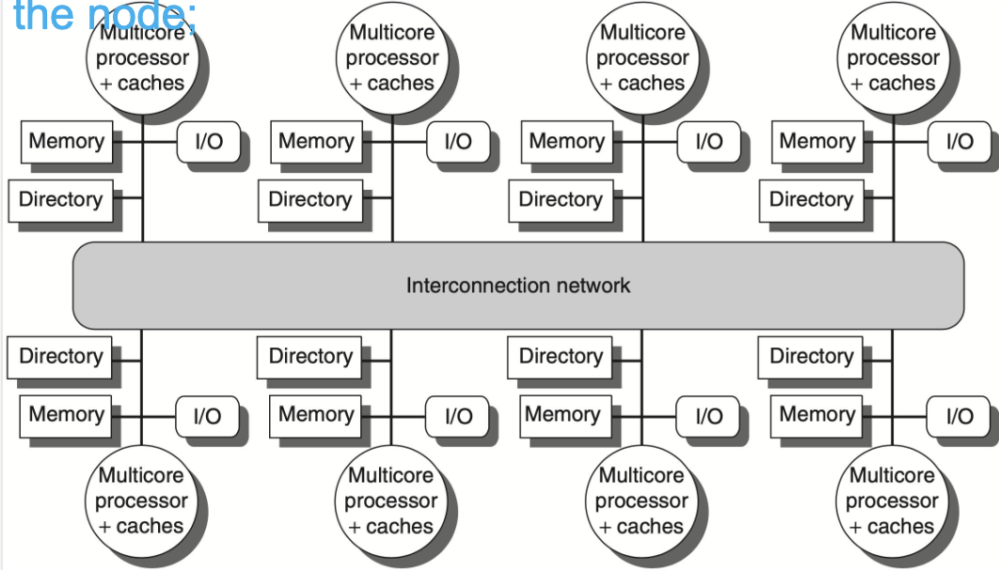
Directory-based protocol 的基本思想是：
- 每个 node 增加一个 directory；
- 每个 directory 负责跟踪本 node 所拥有那部分 memory addresses 的 sharing status；
- 当某个 cache miss 发生时，不需要广播给所有 caches，而是先询问对应的 home directory；
- home directory 根据记录决定应该给谁发 invalidate、fetch 或 data reply。
5.5.2 Directory Messages¶
Directory 的三种状态
| Directory state | 含义 | Memory |
|---|---|---|
| Shared | 一个或多个 nodes cached 了该 block | up to date |
| Uncached | 没有 node 缓存该 cache block | up to date |
| Modified | 只有一个 node 有该 block，并且已经写过内容 | out of date |
常见 messages 可以整理如下：
- P: requesting node number
- A: requested address
- D: data contents
| Message type | Source | Destination | Contents | 作用 |
|---|---|---|---|---|
| Read miss | Local cache | Home directory | P, A | P 在地址 A read miss，请求数据并把 P 加入 read sharers |
| Write miss | Local cache | Home directory | P, A | P 在地址 A write miss，请求数据并让 P 成为 exclusive owner |
| Invalidate | Local cache | Home directory | A | 请求 home directory 让其他 remote caches invalidated |
| Invalidate | Home directory | Remote cache | A | 使 remote cache 中地址 A 的 shared copy 失效 |
| Fetch | Home directory | Remote cache | A | 从 remote cache 取回 block，并把 remote cache 状态改为 shared |
| Fetch / invalidate | Home directory | Remote cache | A | 从 remote cache 取回 block，并使 remote copy invalid |
| Data value reply | Home directory | Local cache | D | 从 home memory 返回数据给请求方 |
| Data write-back | Remote cache | Home directory | A, D | remote cache 把地址 A 的数据 D 写回 home |
这些消息可以分成三组理解：
- local to home：本地 cache 发生 read miss / write miss，先去问 home directory；
- home to remote：如果最新数据或已有副本在 remote cache 中，home directory 再向 remote cache 发 invalidate、fetch 或 fetch/invalidate；
- data transfer：最终通过 data value reply 或 data write-back 传递真正的数据。
5.5.2 Directory state transition¶
Directory-based 和 snooping 的状态结构相似，但区别是：
- 原来广播到 bus 的 write miss / read miss，现在变成显式的 point-to-point messages
Typical Diagrams¶
下面按照 home directory 当前状态来理解几个典型流程。
Read Miss to Uncached¶
没有任何节点缓存 \(A\)，地址 \(A\) 的 home memory 有最新值 \(D\)：
Node P Home
│ │
│ 1.Read miss(P, A) │
│────────────────────────→│
│ │ 查询 Directory: Uncached, 直接从 Memory 取 D
│ 2.Data value reply(D) │
│←────────────────────────│
│ │ 3. 更新 Directory
│ │ State: Uncached → Shared, Sharers = {P}
Write Miss to Uncached¶
没有任何节点缓存 \(A\)，节点 \(P\) 想写地址 \(A\) 对应的值
Node P Home
│ │
│ 1. Write miss(P, A) │
│────────────────────────→│
│ │ 查询 Directory: Uncached，从 Memory 取 D
│ 2. Data value reply(D) │
│←────────────────────────│
│ │ 3. 更新 Directory
│ │ 状态: Uncached → Modified, Owner = {P}
Read Miss to Shared¶
已经有其他节点在共享读 A，Memory 仍然有最新值。
- 更新
Sharers后不需要通知 Q 和 R - 因为 P 只是读，多人共享读是合法的。只要 Memory 有最新值，home 直接回复即可。
Node P Home Node Q, R
│ │ │
│ 1. Read miss(P, A) │ │
│────────────────────────→│ │
│ │ 查 Directory:Shared
│ │ Memory 有最新值，直接给
│ 2. Data value reply(D) │ │
│←────────────────────────│ │
│ │ 3. 更新 Directory
│ │ Sharers = {Q, R, P} │
│ │ │
Write Miss to Shared¶
如果 block 是 Shared，而 \(P\) 想写，就必须让其他 sharers 失效：
- \(P \rightarrow \text{home}\)：发送
Write miss(P, A) - \(\text{home} \rightarrow \text{old sharers}\)：对旧 sharers 发送
Invalidate(A) - \(\text{home} \rightarrow P\)：返回数据或确认 ownership
- directory 状态变成 Modified / Exclusive，记录
Sharers = {P}或Owner = {P}
Read Miss to Modified¶
如果 block 是 Modified，说明最新数据在某个 remote owner cache 中，home memory 是旧的
此时 \(P\) read miss：
- \(P \rightarrow \text{home}\)：发送
Read miss(P, A)； - \(\text{home} \rightarrow \text{owner}\)：发送
Fetch(A)； - \(\text{owner} \rightarrow \text{home}\)：发送
Data write-back(A, D)； - \(\text{home} \rightarrow P\)：返回
Data value reply(D)； - directory 状态变成 Shared，并把 owner 和 \(P\) 都纳入 sharers。
Write Miss to Modified¶
如果 block 是 Modified / Exclusive，而另一个节点 \(P\) 想写：
- \(P \rightarrow \text{home}\)：发送
Write miss(P, A)； - \(\text{home} \rightarrow \text{old owner}\)：发送
Fetch/invalidate(A)； - \(\text{old owner} \rightarrow \text{home}\)：发送
Data write-back(A, D)，并使自己的 copy invalid； - \(\text{home} \rightarrow P\)：返回数据 / ownership；
- directory 仍保持 Modified / Exclusive，但 owner 变成 \(P\)。
Individual Cache Block¶
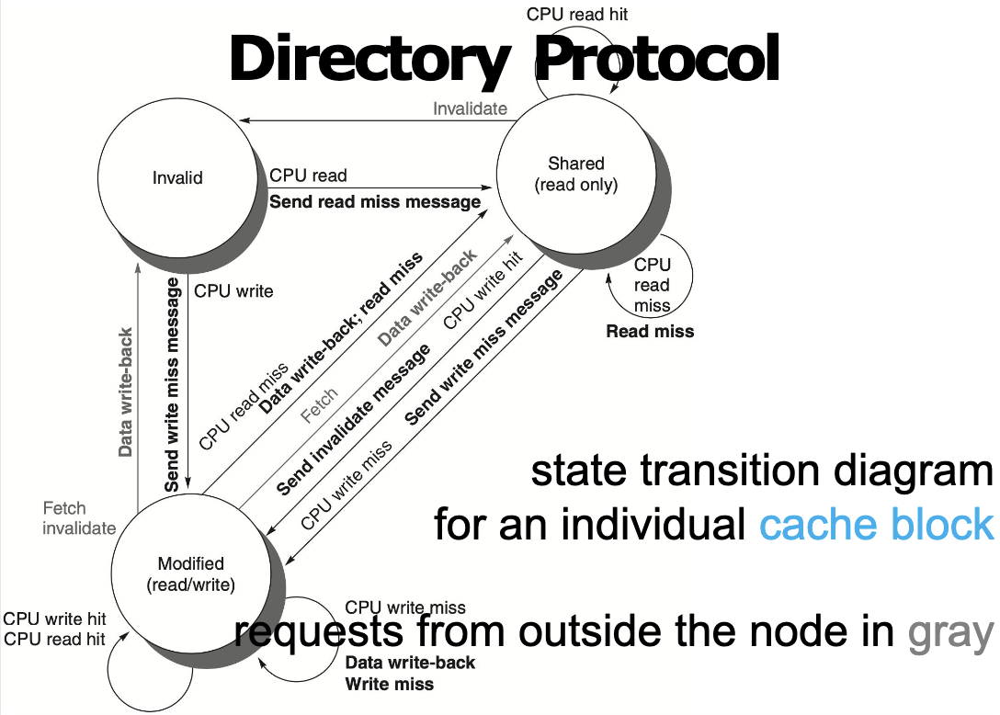
对单个 cache block 来说：
- I 状态下 CPU read，需要向 home 发送 read miss message，收到数据后进入 S；
- I 状态下 CPU write，需要向 home 发送 write miss message，获得数据和 ownership 后进入 M；
- S 状态下 CPU read hit，直接命中；
- S 状态下 CPU write，需要向 home 发送 invalidate / ownership request，使其他 sharers 失效后进入 M；
- M 状态下 CPU read/write hit，直接在本地 cache 访问；
- 若 home directory 发来 fetch，说明其他 node 想读这个 modified block，本 cache 需要 data write-back，并通常退到 S；
- 若 home directory 发来 fetch/invalidate，说明其他 node 想获得写权限，本 cache 需要 data write-back，并进入 I。
Note
PPT 中说明，在实际实现中，对 shared block 的写可以被看成 ownership request / upgrade request，不一定真的重新 fetch 数据；但为了讲清楚基本协议，图中把它作为 write miss 处理。
Directory Side¶
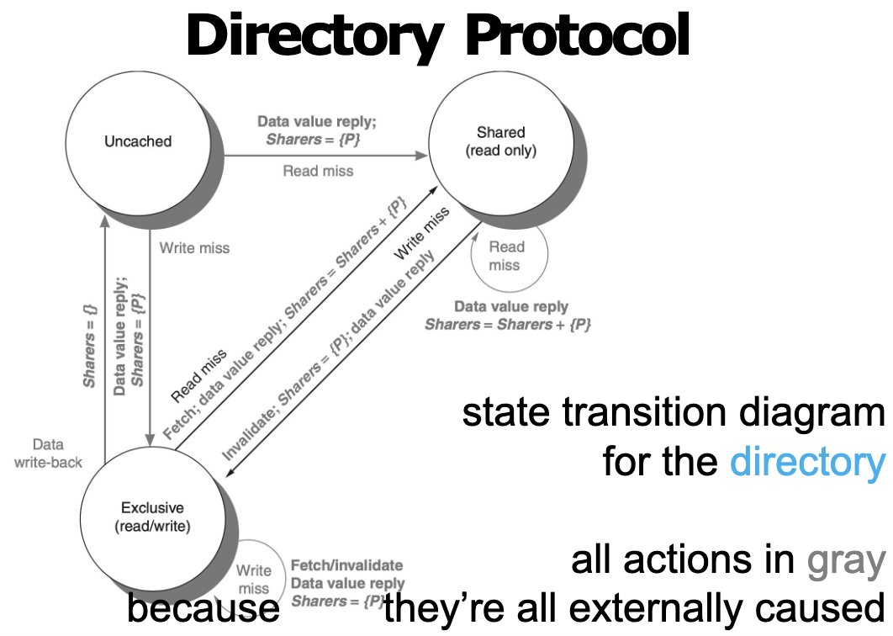
从 directory 的角度看，它只响应外部请求，因此图中所有动作都是 externally caused。根据 PDF 中的状态图，可以整理成：
| Directory state | 请求 | 新状态 | Directory 动作 |
|---|---|---|---|
| Uncached | Read miss from P | Shared | 返回 data value，设置 Sharers = {P} |
| Uncached | Write miss from P | Modified / Exclusive | 返回 data value，设置 owner / sharer 为 {P} |
| Shared | Read miss from P | Shared | 返回 data value，更新 Sharers = Sharers + {P} |
| Shared | Write miss from P | Modified / Exclusive | 对其他 sharers 发送 invalidates，返回 data，设置 Sharers = {P} |
| Modified / Exclusive | Read miss from P | Shared | 向 owner 发送 fetch，owner write-back，返回 data，更新 sharers |
| Modified / Exclusive | Write miss from P | Modified / Exclusive | 向旧 owner 发送 fetch/invalidate，返回 data，设置 owner 为 P |
| Modified / Exclusive | Data write-back | Uncached | 写回 home memory，清空 sharers |
Directory protocol 的核心优势是减少 broadcast。Home directory 知道谁可能持有 cache block，因此可以只联系相关 nodes，而不是让所有 caches 都 snoop 每一次 miss。
Directory Protocol 的复习重点
- Directory 保存每个 block 的 state 和 sharers / owner 信息。
- Read miss 通常增加 sharer；write miss 通常需要 invalidating other sharers。
- Modified block 的最新数据不在 memory，而在 owner cache；home directory 需要 fetch 或 fetch/invalidate。
- Directory-based protocol 用更多状态信息和消息交换，换取更好的扩展性。
5.6 Synchronization¶
如果有多个线程对同⼀块内存进⾏读写，需要保证他们对同⼀块内存的读写是有序的。
- 一般使用硬件原语来实现
硬件原语（Hardware Primitives）
- 这些操作都是原子性的，不能被打断。一旦开始执行这条指令，直到它执行完毕之前，不会有其他指令插入，也不会有其他核心干扰这块内存的状态。
1. Atomic Exchange (原子交换)- 寄存器与内存交换，常用于实现简单的自旋锁（Spinlock）
- 这条指令会将寄存器中的值写入内存地址，同时将内存地址原本的旧值读回到寄存器中。这两个动作是同时完成的。
2. Test-and-set (测试并设置) - 测试某一位的值，并将其设置为 1。
- 读取内存中的一个布尔值，如果它是 0，就把它改成 1，并返回旧值（0）；如果它已经是 1，就保持为 1，并返回旧值（1）。整个过程不可分割。
- 实现互斥锁：如果返回 0，说明锁是开的；如果返回 1，说明锁被占了。
3. Fetch-and-increment (取出并加一 / 获取并增加) - 读取内存中的数值返回给寄存器，同时将内存中的数值加 1。
- 常用于生成唯一的序列号、ID 分配，保证排队的公平性。
5.6.1 Implementing Locks¶
# 使⽤ Atomic Exchange 实现锁
DADDUI R2, R0, #1
lockit: EXCH R2, 0(R1)
BNEZ R2, lockit
- 代码逻辑分析：
DADDUI R2, R0, #1：首先将寄存器 \(R_2\) 的值设为 \(1\)（代表“想加锁”）lockit: EXCH R2, 0(R1)：原子地交换 \(R_2\) 和内存地址 \(R_1\) 处的值BNEZ R2, lockit：检查 \(R_2\) 的值。- 如果不为 \(0\)，说明交换回来的值是 \(1\)，即锁之前就被占用了，则跳回
lockit继续尝试。如果为 \(0\)，说明抢到了锁，继续向下执行。
- 如果不为 \(0\)，说明交换回来的值是 \(1\)，即锁之前就被占用了，则跳回
- 通过“交换”，一次性完成了“检查锁状态”和“设置锁状态”两个步骤，保证了原子性。
# 使⽤ Test-and-set 实现锁
lockit: T&S R2, 0(R1)
BNEZ R2, lockit
- 代码逻辑分析：
lockit: T&S R2, 0(R1)：将内存地址 \(R_1\) 的值设为 \(1\)，并将该地址旧的值 存入 \(R_2\)BNEZ R2, lockit：如果旧值不为 \(0\)（说明之前有人占了锁），则跳回重试。如果旧值是 \(0\)，说明刚才成功把锁从空闲变成了占用，获得锁。
- 这是一个专门用于实现锁的指令，逻辑比 Exchange 更直接。
5.6.2 LL/SC¶
为什么需要 LL/SC？
有些操作比较复杂，比如“取出值 -> 加 1 -> 存回”。这很难用一条简单的硬件指令在一个周期内完成。如果分三步走，中间可能会被其他处理器打断。LL/SC 提供了一种乐观锁的机制来解决这个问题
- Load-Linked (LL) / Load-Reserved (LR)：
- 从内存读取数据到寄存器
- 硬件会在后台“标记”或“保留”这个内存地址
- Store-Conditional (SC)：
- 尝试将新数据写入该内存地址。
- 硬件会检查自上次 LL 以来，该内存地址是否被其他处理器修改过
- 如果没有被修改：写入成功，SC 指令返回“成功”信号
- 如果被修改了：写入失败，内存不变，SC 指令返回“失败”信号。
Example
# Atomic Exchange
try: mov x3,x4 ;mov exchange value
lr x2, x1 ;load reserved from
sc x3,0(x1) ;store conditional
bnez x3,try ;branch store fails
mov x4,x2 ;put load value in x4?
这段代码的目标是：将寄存器 \(x_4\) 中的值与内存地址 \(0(x_1)\) 中的值进行互换。
try: mov x3, x4：把要写入内存的新值备份到 \(x_3\)lr x2, x1：从 \(x_1\) 读取旧值存入 \(x_2\)。同时，硬件会给这个地址打上保留标记。sc x3, 0(x1)：尝试将 \(x_3\) 写入内存地址 \(0(x_1)\)- 如果自上次 \(lr\) 以来，该地址没有被其他核心修改过 -> 写入成功，并将 \(x_3\) 设为 0。
- 如果被修改过 -> 写入失败，内存不变，并将 \(x_3\) 设为非 0 值
bnez x3, try：检查的结果,如果 \(x_3\) 不为 0，跳回try重新开始整个流程。mov x4, x2：如果代码能运行到这里，说明交换成功。此时x2里存的是从内存读出来的旧值。将其放入x4，完成了“把旧值还给调用者”的动作。
# Fetch-and-increment
try: lr x2,x1 ;load reserved 0(x1)
addi x3,x2,1 ;increment
sc x3,0(x1) ;store conditional
bnez x3,try ;branch store fails
try: lr x2, x1- 加载并监控：读取内存地址
x1的当前值到x2。硬件开始监控该地址。
- 加载并监控：读取内存地址
addi x3, x2, 1- 本地计算：在寄存器层面，将读取到的值
x2加 1，结果存入x3。这是 LL/SC 的优势所在——允许在 Load 和 Store 之间插入任意计算指令。
- 本地计算：在寄存器层面，将读取到的值
sc x3, 0(x1)- 条件存储：尝试将计算后的新值
x3写回内存。 - 同样，如果成功，
x3变为 0；如果失败（有人抢跑了），x3变为非 0。
- 条件存储：尝试将计算后的新值
bnez x3, try- 重试循环：如果写入失败，说明在我们做加法的时候别人也改了数据，我们的计算基于旧数据，已经失效了。必须跳回
try重新读取最新的数据，重新加 1，再次尝试写入。
- 重试循环：如果写入失败，说明在我们做加法的时候别人也改了数据，我们的计算基于旧数据，已经失效了。必须跳回
5.6.3 Spinlock¶
⽤户级别的同步⽅式。处理器不断地检查⼀个变量的值，直到它变成 0。这个变量叫做锁。
addi x2, x0，#1
lockit: EXCH x2,0(x1) ;atomic exchange
bnez x2, lockit ;already locked?
- 可以看到每⼀次尝试 EXCH 都会导致总线的开销，性能较差。
优化：
try: li x2, #1 ; 准备要写入的值 1 (Locked)
lockit: lw x3, 0(x1) ; 【优化点】普通加载：先偷偷看一眼锁现在的状态
bnez x3, lockit ; 如果锁还是被占用的 (不为0)，直接跳回继续看，不要打扰总线
EXCH x2, 0(x1) ; 【关键动作】只有当上面看到锁是0时，才执行原子交换去抢锁
bnez x2, try ; 如果交换回来的旧值不为0 (说明被人抢先了)，跳回 try 重新开始
也可以⽤ LL 与 SC 来实现：
lockit: LL x2, 0(x1) ; 1. 链接加载：读取锁的值到 x2，并监控该地址
BNEZ x2, lockit ; 2. 检查：如果读到的值是 1 (被占用)，直接重试 LL
Addui x2, x0, #1 ; 3. 准备：在寄存器里把值改为 1 (Locked)
SC x2, 0(x1) ; 4. 条件存储：尝试把 1 写回内存
BEQZ x2, lockit ; 5. 检查写入结果：
; 如果 x2 为 0 (写入失败，说明期间有人动了内存)，跳回 lockit 重试
; 如果 x2 不为 0 (写入成功)，则获得锁，继续向下执行